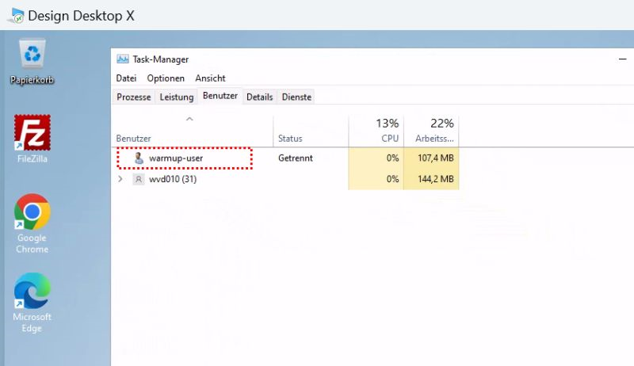
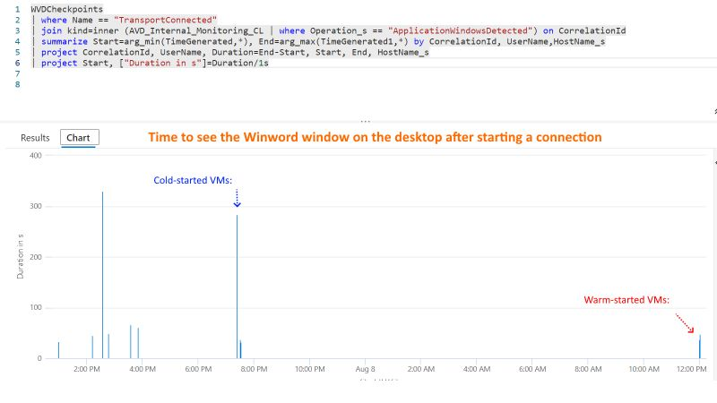

Improve AVD User Experience: Warm-Up to decreas User login time
If you are running Azure Virtual Desktop with FSLogix, the first login to a host takes longer than the following logins. I also wrote about this effect (I call is Cold vs. Warm start) a few weeks ago here: https://lnkd.in/eEQHP5gA and https://www.linkedin.com/posts/marcelmeurer_azurevirtualdesktop-coldstart-warmstart-activity-7227298731124019200--nsM
In short, If a VM is started in Azure, the first login of a user takes much longer than the login of the following users to this VM. And: It makes no difference if the first user logs in one or 30 minutes after starting the VM. I did a lot of tests by running ProcMon, FileActivityWatch, and RegistryChangesView in the system context to capture events during the first login 🤓. I can clearly see dependencies to AppX packages on the VM. In my tests, processing of AppX packages for the first user took 120 seconds, and for the next user, only a few seconds. Right now, I cannot reproduce the first AppX processing without a user logging into the host (but I’m working on that). The first user will also see a black screen during the login.
Therefore, I did another test: Create a temporary local user on the VM directly after the start and make a login (autogenerated passwords and direct deletion of the users after the login).
The result is as expected: After the start of the VM, the warmup user triggers the AppX processing and other “initializations.” The next - regular - user experiences a much faster login while that is technically the second login for the VM.
I wrote a script to automate a local logon after each VM/host’s start. That may not be the best way to handle this solution, but it is a workaround until I find a more pragmatic solution without a warm-up user.
 
How does it work? 
The script is started directly after the start of a VM/host and runs in the context of the computer. The following steps happen:
- Temporarily, allow RDS logon without validation computer certificates (only for the system account)
- Generate a local user (warm-up user) with a random password. The account automatically expires after 10 minutes
- Add the user to the Remote Desktop User Group
- Configure the sign-on via RDS to localhost
- The warm-up user connects via RDS to localhost (the first user logon)
- Wait 5 minutes
- Logoff the user
- Remove the user account
- Remove the user profile from disk
There are some additional error-handling routines in the script.
Pro tip: If you ever search for a way to get session information with PowerShell without parsing qwinsta.exe or quser.exe, check the script. It also contains a PowerShell method to log off a specific session.
Install the warm-up user script
You can install the script on an existing host or on your Golden Master / Template VM (which you hopefully capture loss-less with WVDAdmin or Hydra for Azure Virtual Desktop). Copy the script to the VM and run the following command in an administrative PowerShell:
.\WarmUp.ps1 -Mode Install
This copies the script to C:\windows\WarmUp.ps1 and creates a scheduled task to start the script automatically with the computer.
The script
Save it as WarmUp.ps1 or download it from here: WarmUp.ps1
param(
[string] $Mode
)
Add-Type -Language CSharp -TypeDefinition @'
using System;
using System.Linq;
using System.Runtime.InteropServices;
using System.Collections.Generic;
namespace Rds {
public static class Sessions {
[DllImport("wtsapi32.dll")]
static extern IntPtr WTSOpenServer([MarshalAs(UnmanagedType.LPStr)] String pServerName);
[DllImport("wtsapi32.dll")]
static extern void WTSCloseServer(IntPtr hServer);
[DllImport("wtsapi32.dll")]
static extern Int32 WTSEnumerateSessions(IntPtr hServer,
[MarshalAs(UnmanagedType.U4)] Int32 Reserved,
[MarshalAs(UnmanagedType.U4)] Int32 Version, ref IntPtr ppSessionInfo,
[MarshalAs(UnmanagedType.U4)] ref Int32 pCount);
[DllImport("wtsapi32.dll")]
static extern void WTSFreeMemory(IntPtr pMemory);
[DllImport("Wtsapi32.dll")]
static extern bool WTSQuerySessionInformation(System.IntPtr hServer, int sessionId, WTS_INFO_CLASS wtsInfoClass, out System.IntPtr ppBuffer, out uint pBytesReturned);
[DllImport("Wtsapi32.dll")]
static extern bool WTSLogoffSession(System.IntPtr hServer, int sessionId, bool wait);
[StructLayout(LayoutKind.Sequential)]
private struct WTS_SESSION_INFO {
public Int32 SessionID;
[MarshalAs(UnmanagedType.LPStr)]
public String pWinStationName;
public WtsConnect State;
}
public enum WTS_INFO_CLASS {
WTSInitialProgram,
WTSApplicationName,
WTSWorkingDirectory,
WTSOEMId,
WTSSessionId,
WTSUserName,
WTSWinStationName,
WTSDomainName,
WTSConnectState,
WTSClientBuildNumber,
WTSClientName,
WTSClientDirectory,
WTSClientProductId,
WTSClientHardwareId,
WTSClientAddress,
WTSClientDisplay,
WTSClientProtocolType,
WTSIdleTime,
WTSLogonTime,
WTSIncomingBytes,
WTSOutgoingBytes,
WTSIncomingFrames,
WTSOutgoingFrames,
WTSClientInfo,
WTSSessionInfo,
WTSSessionInfoEx,
WTSConfigInfo,
WTSValidationInfo,
WTSSessionAddressV4,
WTSIsRemoteSession
}
public enum WtsConnect {
Active,
Connected,
ConnectQuery,
Shadow,
Disconnected,
Idle,
Listen,
Reset,
Down,
Init
}
public class WtsSessionInformation {
public string InitialProgram;
public string ApplicationName;
public string WorkingDirectory;
public string OEMId;
public int SessionId;
public string UserName;
public string WinStationName;
public string DomainName;
public WtsConnect ConnectState;
public string ConnectStateString;
public int ClientBuildNumber;
public string ClientName;
public string ClientDirectory;
}
public static IntPtr OpenServer(String name) {
IntPtr server = WTSOpenServer(name);
return server;
}
public static void CloseServer(IntPtr serverHandle) {
WTSCloseServer(serverHandle);
}
public static bool LogoffSession(int id, bool waitForLogoff) {
IntPtr serverHandle = IntPtr.Zero;
serverHandle = OpenServer(Environment.MachineName);
IntPtr sessionInfoPtr = IntPtr.Zero;
try {
return WTSLogoffSession(serverHandle, id, waitForLogoff);
} catch (Exception e) {
Console.WriteLine("Exception querying session information: " + e.ToString());
} finally {
WTSFreeMemory(sessionInfoPtr);
CloseServer(serverHandle);
}
return false;
}
public static WtsSessionInformation GetSession(string userName) {
var sessions=GetSessions();
return sessions.FirstOrDefault(n=>string.Equals(n.UserName, userName, StringComparison.InvariantCultureIgnoreCase));
}
public static List < WtsSessionInformation > GetSessions() {
var wtsList = new List < WtsSessionInformation > ();
IntPtr serverHandle = IntPtr.Zero;
serverHandle = OpenServer(Environment.MachineName);
IntPtr sessionInfoPtr = IntPtr.Zero;
try {
IntPtr sPtr = IntPtr.Zero;
Int32 sessionCount = 0;
Int32 retVal = WTSEnumerateSessions(serverHandle, 0, 1, ref sessionInfoPtr, ref sessionCount);
Int32 dataSize = Marshal.SizeOf(typeof(WTS_SESSION_INFO));
Int64 currentSession = (long) sessionInfoPtr;
uint bytes = 0;
if (retVal != 0) {
for (int i = 0; i < sessionCount; i++) {
WTS_SESSION_INFO si = (WTS_SESSION_INFO) Marshal.PtrToStructure((System.IntPtr) currentSession, typeof(WTS_SESSION_INFO));
currentSession += dataSize;
var wts = new WtsSessionInformation();
if (WTSQuerySessionInformation(serverHandle, si.SessionID, WTS_INFO_CLASS.WTSUserName, out sPtr, out bytes)) {
wts.UserName = Marshal.PtrToStringAnsi(sPtr);
WTSFreeMemory(sPtr);
}
if (WTSQuerySessionInformation(serverHandle, si.SessionID, WTS_INFO_CLASS.WTSDomainName, out sPtr, out bytes)) {
wts.DomainName = Marshal.PtrToStringAnsi(sPtr);
WTSFreeMemory(sPtr);
}
if (WTSQuerySessionInformation(serverHandle, si.SessionID, WTS_INFO_CLASS.WTSWinStationName, out sPtr, out bytes)) {
wts.WinStationName = Marshal.PtrToStringAnsi(sPtr);
WTSFreeMemory(sPtr);
}
if (WTSQuerySessionInformation(serverHandle, si.SessionID, WTS_INFO_CLASS.WTSSessionId, out sPtr, out bytes)) {
wts.SessionId = Marshal.ReadInt32(sPtr);
WTSFreeMemory(sPtr);
}
if (WTSQuerySessionInformation(serverHandle, si.SessionID, WTS_INFO_CLASS.WTSInitialProgram, out sPtr, out bytes)) {
wts.InitialProgram = Marshal.PtrToStringAnsi(sPtr);
WTSFreeMemory(sPtr);
}
if (WTSQuerySessionInformation(serverHandle, si.SessionID, WTS_INFO_CLASS.WTSApplicationName, out sPtr, out bytes)) {
wts.ApplicationName = Marshal.PtrToStringAnsi(sPtr);
WTSFreeMemory(sPtr);
}
if (WTSQuerySessionInformation(serverHandle, si.SessionID, WTS_INFO_CLASS.WTSWorkingDirectory, out sPtr, out bytes)) {
wts.WorkingDirectory = Marshal.PtrToStringAnsi(sPtr);
WTSFreeMemory(sPtr);
}
if (WTSQuerySessionInformation(serverHandle, si.SessionID, WTS_INFO_CLASS.WTSConnectState, out sPtr, out bytes)) {
wts.ConnectState = (WtsConnect) Marshal.ReadInt32(sPtr);
wts.ConnectStateString = wts.ConnectState.ToString();
WTSFreeMemory(sPtr);
}
if (WTSQuerySessionInformation(serverHandle, si.SessionID, WTS_INFO_CLASS.WTSClientBuildNumber, out sPtr, out bytes)) {
wts.ClientBuildNumber = Marshal.ReadInt32(sPtr);
WTSFreeMemory(sPtr);
}
if (WTSQuerySessionInformation(serverHandle, si.SessionID, WTS_INFO_CLASS.WTSClientName, out sPtr, out bytes)) {
wts.ClientName = Marshal.PtrToStringAnsi(sPtr);
WTSFreeMemory(sPtr);
}
if (WTSQuerySessionInformation(serverHandle, si.SessionID, WTS_INFO_CLASS.WTSClientDirectory, out sPtr, out bytes)) {
wts.ClientDirectory = Marshal.PtrToStringAnsi(sPtr);
WTSFreeMemory(sPtr);
}
if (!string.IsNullOrEmpty(wts.UserName)) wtsList.Add(wts);
}
}
return wtsList;
} catch (Exception e) {
Console.WriteLine("Exception querying session information: " + e.ToString());
} finally {
WTSFreeMemory(sessionInfoPtr);
CloseServer(serverHandle);
}
return null;
}
}
}
'@
$LogDir="$($env:windir)\system32\LogFiles"
$LogFile="$($LogDir)\AVD.WarmUp.log"
function LogWriter($message) {
$message = "$(Get-Date ([datetime]::UtcNow) -Format "o") $message"
write-host($message)
if ([System.IO.Directory]::Exists($LogDir)) { try { write-output($message) | Out-File $LogFile -Append } catch {} }
}
if ($mode -like "install") {
LogWriter("Copy script to windir")
Copy-Item "$($MyInvocation.InvocationName)" -Destination ($env:windir + "\WarmUp.ps1")
LogWriter("Creating schedule task to run the script at startup")
$action = New-ScheduledTaskAction -Execute "$env:windir\System32\WindowsPowerShell\v1.0\Powershell.exe" -Argument "-executionPolicy Unrestricted -File `"$($env:windir)\WarmUp.ps1`""
$trigger = New-ScheduledTaskTrigger -AtStartup
$principal = New-ScheduledTaskPrincipal 'NT Authority\SYSTEM' -RunLevel Highest
$settingsSet = New-ScheduledTaskSettingsSet
$task = New-ScheduledTask -Action $action -Principal $principal -Trigger $trigger -Settings $settingsSet
Register-ScheduledTask -TaskName 'ITPC-AVD-WarmUpUser' -InputObject $task -ErrorAction Ignore
Enable-ScheduledTask -TaskName 'ITPC-AVD-WarmUpUser'
} else {
$localUserName = "warmup-user"
$characters = 'abcdefghijklmnopqrstuvwxyzABCDEFGHIJKLMNOPQRSTUVWXYZ0123456789!@#' #$%^&*()-_=+[]{}|;:,.<>?'
$localUserPWPlain = -join (1..32 | ForEach-Object { Get-Random -InputObject $characters.ToCharArray() }) +"!@1aA"
$localUserPW = ConvertTo-SecureString -String $localUserPWPlain -AsPlainText -Force # https://www.sharepointdiary.com/2020/04/powershell-generate-random-password.html
# Store default configuration
LogWriter("Getting local configuration to use saved credentials for the warmup user")
$oldAuthenticationLevelOverride=$null
if (Test-Path "HKCU:\Software\Microsoft\Terminal Server Client") {
$oldAuthenticationLevelOverride = Get-ItemProperty -Path "HKCU:\Software\Microsoft\Terminal Server Client" -Name "AuthenticationLevelOverride" -ErrorAction SilentlyContinue
} else {
New-Item -Path "HKCU:\Software\Microsoft\Terminal Server Client" -Force -ErrorAction SilentlyContinue
}
if ($oldAuthenticationLevelOverride -eq $null) {$oldAuthenticationLevelOverride = 99} else {$oldAuthenticationLevelOverride = $oldAuthenticationLevelOverride.AuthenticationLevelOverride}
try {
LogWriter("Modifying configuration to login warmup user with stored credentials")
# Set temporary configuration to allow user logins
New-ItemProperty -Path "HKCU:\Software\Microsoft\Terminal Server Client" -Name "AuthenticationLevelOverride" -Value 0 -Force
New-ItemProperty -Path "HKLM:\Software\Policies\Microsoft\Windows NT\Terminal Services" -Name "DisablePasswordSaving" -Value 1 -Force
# Prepare temporary local user
if ((Get-LocalUser -Name $localUserName -ErrorAction SilentlyContinue) -ne $null) {
LogWriter("Removing existing local warmup user")
Remove-LocalUser -Name $localUserName
}
LogWriter("Adding local user")
$localUser = New-LocalUser -Name $localUserName -Password $localUserPW -AccountExpires (Get-Date).AddMinutes(10) -PasswordNeverExpires -UserMayNotChangePassword
# Add user to remote desktop group
LogWriter("Adding user to the remote desktop group")
Add-LocalGroupMember -SID "S-1-5-32-555" -Member $localUserName -ErrorAction SilentlyContinue
# Login user
LogWriter("Adding credentials of the warmup user to the key store")
cmdkey /generic:TERMSRV/localhost /user:"$($env:Computername)\$($localUserName)" /pass:$localUserPWPlain
$startTime=Get-Date
$i=0
do {
LogWriter("Login in user warmup user")
if ($mstsc) {
$mstsc.Kill()
Start-Sleep -Seconds 6
}
$mstsc = Start-Process -PassThru -FilePath "mstsc.exe" -ArgumentList "/v:localhost"
# Wait for the user to login
LogWriter("Waiting a few seconds")
Start-Sleep -Seconds 20
$i++
} while ([Rds.Sessions]::GetSession($localUserName) -eq $null -and $i -le 10)
# Remove credentials
LogWriter("Removing credentials from the key store")
cmdkey /delete:TERMSRV/localhost
# Check, if user is connected
$session=[Rds.Sessions]::GetSession($localUserName)
if ($session -eq $null) {
LogWriter("Warning: Warm-up user is not connected. So, the workaround is not working for some reasons")
} else {
# Let the user for a while in the session and then logoff
LogWriter("Let the user logged in for a while")
Start-Sleep -Seconds 300
LogWriter("Logoff user")
[Rds.Sessions]::LogoffSession($session.SessionId, $true)
# Remove profile of the user
try {
LogWriter("Delete profile of the warm-up user")
@(Get-CimInstance -Class Win32_UserProfile | Where-Object { $_.Loaded -eq $false -and ($_.LocalPath.split('\')[-1] -like $localUserName -or $_.LocalPath.split('\')[-1] -like "$($localUserName).*")}) | Remove-CimInstance
} catch {
LogWriter("Error: Cannot delete the profile of the warmup user: $_")
}
}
LogWriter("Terminate mstsc.exe, if running")
$mstsc.Kill()
} catch {
LogWriter("Error: $_")
} finally {
# Remove user
LogWriter("Disable and remove user")
Remove-LocalGroupMember -SID "S-1-5-32-555" -Member $localUserName
Disable-LocalUser -Name $localUserName -ErrorAction SilentlyContinue
Remove-LocalUser -Name $localUserName -ErrorAction SilentlyContinue
# Restore default configuration
LogWriter("Restoring local configuration")
if ($oldAuthenticationLevelOverride -eq 99) {
Remove-ItemProperty "HKCU:\Software\Microsoft\Terminal Server Client" -Name "AuthenticationLevelOverride" -Force
} else {
New-ItemProperty -Path "HKCU:\Software\Microsoft\Terminal Server Client" -Name "AuthenticationLevelOverride" -Value $oldAuthenticationLevelOverride -Force
}
}
LogWriter("Done")
}